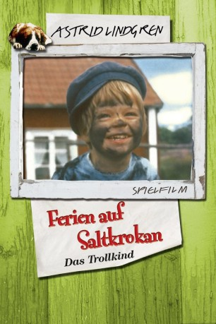
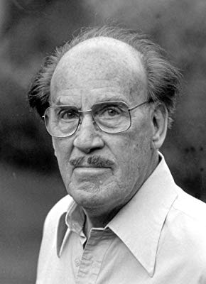
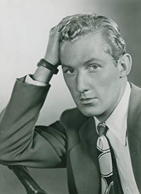
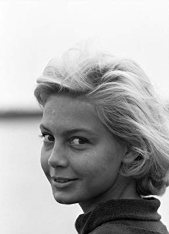
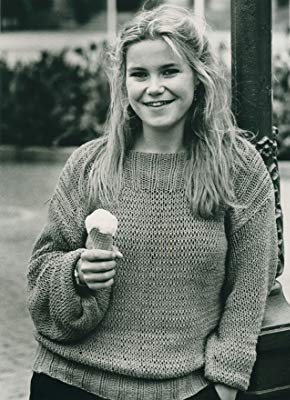

#11563 Ferien auf Saltkrokan 2 - Das Trollkind
 
 IMDB-Wertung: 6.3 / 10
IMDB-Wertung: 6.3 / 10  Metascore: 0
Metascore: 0 
Ein Wirbelwind in Kinderschuhe fegt über die Ferieninsel Saltkrokan: Skrollan, die kleine Tochter von Malin und Peter. Tjorven, Stina und der Bernhardiner Bootsmann sind natürlich mit dabei, wenn das Trollkind Skrollan seinen Opa Melker und alle anderen zur Verzweiflung treibt. Pelle, Malins kleiner Bruder, wird richtig eifersüchtig, weil sich alle nur noch um den kleinen Irrwisch dreht. Um ihren Freund zu helfen, verkauft Stina das Mädchen für 25 Öre an den Fischer Vestermann. Aber keine Bange: Schon bald ist die Kleine wieder bei Malin. Und heckt gleich den nächsten Unfug aus.
Jahr: 1965
Dauer: 89 Minuten
FSK: 0
Land: Schweden Studio: ArtfilmTonspuren:
Untertitel:
Auflösung: 720p (1280x720) Größe: 2600 MB
Genre: Drama, Komödie, Familie
Regisseur: Olle Hellbom
Drehbuch: Astrid Lindgren
Soundtrack: Ulf Björlin
Darsteller:
-  Torsten Lilliecrona als Melker Melkersson
-  Bengt Eklund als Nisse Grankvist
-  Louise Edlind als Malin Melkersson
- Torsten Wahlund als Peter Malm
- Siegfried Fischer als Söderman
-  Maria Johansson als Tjorven Grankvist
- Manne Grünberger als Vesterman
- Stephen Lindholm als Pelle Melkersson
- Kristina Jämtmark als Stina
- Kajsa Dandenell als Skrållan Malm
- Urban Strand als Niklas Melkersson (uncredited)
- Björn Söderbäck als Johan Melkersson (uncredited)
- Bitte Ulvskog als Freddy Grankvist (uncredited)
- Lillemor Österlund als Teddy Grankvist (uncredited)
Datei: X:\Kinder Collections\Astrid Lindgren\Ferien auf Saltkrokan 2 - Das Trollkind (1965, FSK0, 1280x720).mkv seit 29.07.2019
Festplatte: Kinder-Filme+Trick
 Es gibt insgesamt 26 Filme in der Gruppe 'Kinder Collections\Astrid Lindgren'
Es gibt insgesamt 26 Filme in der Gruppe 'Kinder Collections\Astrid Lindgren'